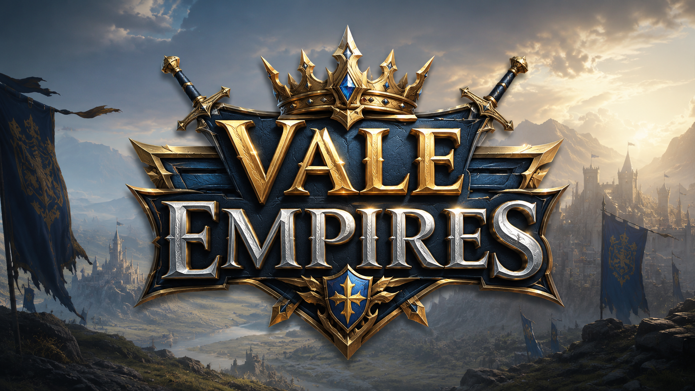
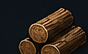
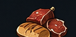
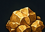
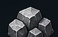
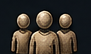

Cada período funciona como um pacote independente, com nações, recursos, unidades, tecnologias e saves próprios.
Defina sua identidade antes de assumir o comando do reino.
Conduza sua civilização da fundação do primeiro povoado ao domínio de um reino.

200/500
200/500
100/500
100/500
10/10